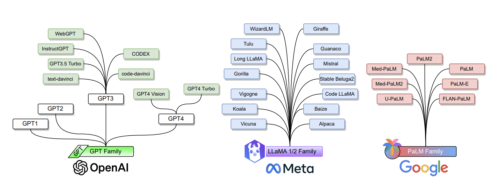
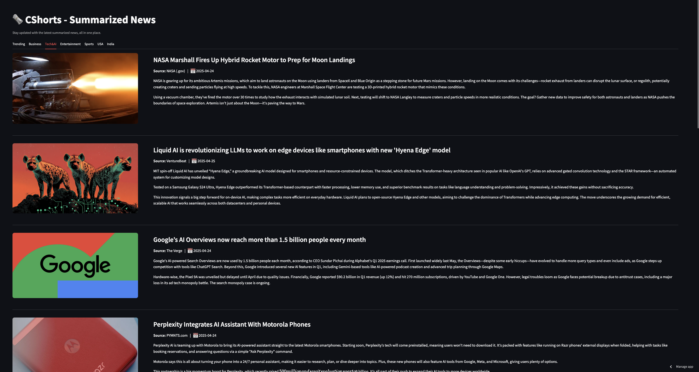

|
Harsha Vardhan
A machine learning engineer passionate about building AI systems that solve real-world problems. Recently completed a Master’s in Data Science from Rutgers University, where I focused on applied machine learning, backend systems, and end-to-end product development. Prior to that, I founded Autodub, a speech translation startup that was acqui-hired by Khabri (YC W19), where I worked as a founding ML engineer building large-scale audio intelligence tools. My interests lie in AI agents, foundation models, and the evolving role of intelligent systems in everyday workflows. When I’m not working, you’ll probably find me exploring authentic restaurants around town or hunting down the next great meal.
Email /
CV /
Twitter /
Github /
LinkedIn
|
|
Experience

|
Data Analyst Internship
June 2024 - Dec 2024
LS Direct Marketing
Software: Pytorch, Python, SQL, VectorDB
|

|
Machine Learning Engineer
Nov 2021 - June 2023
Vedantu Learning
Software: Pytorch, Python, HF-Transformers, SQL, Tensorflow, Docker
|

|
Founding Engineer
Dec 2020 - Nov 2021
Khabri Audio (YC W19)
Software: Pytorch, Python, HF-Transformers, SQL, Tensorflow, Docker
|

|
Founder
April 2018 - Dec 2020
Autodub
Software: Pytorch, Python, HF-Transformers, SQL, Tensorflow, Docker
|
Research
|

|
Large Language Models: A survey on Use-case-Mapping & Evaluations
Zihan Xu,
Harsha Vardhan,
Mhamed Bettaieb,
Research ongoing — Paper in preparation
|
Projects
|

|
CSHORTS – AI NEWS SUMMARIZATION PLATFORM
Real-time, category-based news digests delivered in under 60 seconds.
More details
- Fine-tuned & 8-bit-quantized a T5 model, slicing model
size by 45 % while preserving ROUGE-L.
- Deployed on AWS SageMaker with autoscaling &
CloudWatch monitoring.
- Built a FastAPI micro-service to ingest content, clean
HTML, and store articles + summaries in
MongoDB Atlas.
- Streamlit front-end groups stories into Trending, Business,
Tech & AI, Entertainment, Sports, USA, and India tabs;
end-to-end latency < 60 s.
- Containerised with Docker & CI/CD via
GitHub Actions.
Code /
Live demo
|
|
|
ENTERPRISE TICKET TRIAGE AUTOMATION SYSTEM
Data & Statistical Services Lab, Princeton University — funded by Chase Bank
AI-driven router that assigns and prioritizes support tickets with > 90 % accuracy.
More details
- Fine-tuned MiniLM embeddings + CatBoost classifier to route
tickets to the correct resolver teams and predict priority levels.
- Achieved over 90 % macro-F1 on both classification tasks
across a 1 M-ticket dataset.
- Built a real-time FastAPI service that scores incoming
tickets and publishes results to internal queues (Kafka).
- Developed a lightweight Streamlit dashboard for Support Ops to
search, monitor, and override triage decisions in-flight.
- Implemented role-based access, audit logging, and encrypted data-at-rest
to meet Chase’s security requirements.
|
Education
|
{kind=link}